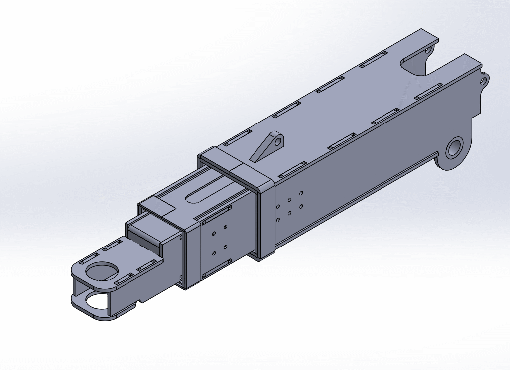

Project at a Glance
A commercial towing operator needed a heavy-duty, repo-style wheel lift built to withstand continuous loading and daily use. TCB Metal Works combined structural steel fabrication, precision welding, and custom metal fabrication to engineer equipment matched to the customer's exact operational requirements.
Introduction
Every custom fabrication project begins with understanding how the finished product will perform in the real world. When TCB Metal Works was approached to fabricate a custom repo-style tow truck wheel lift, the objective was to create a durable, heavy-duty solution capable of withstanding the demands of commercial towing while delivering reliable day-to-day performance.
The project combined structural steel fabrication, precision welding, and custom manufacturing techniques to produce equipment designed specifically for the customer's operational requirements.
The Challenge
Commercial towing equipment experiences continuous heavy loading, road vibration, and repeated use. Unlike standard fabricated components, a wheel lift must safely transfer loads while remaining reliable under demanding conditions.
The project required careful consideration of:
- Structural strength
- Weld integrity
- Material durability
- Serviceability
- Precision fitment
- Long-term reliability
Every component needed to be manufactured with durability and safety as the highest priorities.
Our Solution
TCB Metal Works designed and fabricated a custom wheel lift assembly tailored to the customer's requirements.
Using proven fabrication methods and quality workmanship, the project focused on creating equipment capable of delivering dependable performance throughout its service life.
Our fabrication process included:
- Structural steel fabrication
- Precision cutting
- MIG welding
- Assembly fabrication
- Quality inspection
- Final finishing
Each stage was completed with close attention to dimensional accuracy and fabrication quality.
Engineering Considerations
Heavy-duty recovery equipment must perform consistently under dynamic loads.
Key engineering considerations included:
- Load distribution
- Structural reinforcement
- Weld quality
- Corrosion resistance
- Ease of maintenance
- Long-term durability
These design principles help maximize service life while minimizing maintenance requirements.
Results
The completed custom wheel lift provides a durable fabrication solution designed specifically for commercial towing applications.
The project demonstrates TCB Metal Works' ability to manufacture custom steel equipment that combines structural integrity, precision fabrication, and dependable performance for demanding industries.
Why Choose TCB Metal Works
Every project is manufactured to meet the customer's specific operational requirements.
From structural steel fabrication to custom equipment manufacturing, TCB Metal Works delivers practical solutions built for strength, durability, and long-term performance.
Frequently Asked Questions
How long does custom fabrication take?
It depends on the scope, complexity, materials, and finishing a project involves. A straightforward part can move quickly, while a fully engineered assembly like a custom wheel lift takes longer to fabricate and inspect. Share your requirements and we will give you a realistic timeline for your specific project.
Can TCB fabricate equipment from engineering drawings?
Yes. We fabricate directly from supplied drawings and specifications, and we can also help develop or refine a design when you are starting from a concept or a rough sketch rather than finished plans.
What steel materials are commonly used?
It depends on the application. Structural carbon steel is common for load-bearing assemblies, stainless steel where corrosion resistance or hygiene matters, and aluminium where weight is a factor. Materials are selected to suit the loads, environment, and expected service life of each project.
Can existing equipment be modified?
Yes. We repair, reinforce, and modify existing equipment as well as build new. If you have a component that needs upgrading, adapting, or strengthening, we can assess it and fabricate the necessary changes.
Do you fabricate one-off custom projects?
Absolutely. Much of our work is one-off custom fabrication built to a customer's specific operational requirements, from single components through to complete assemblies like this wheel lift.